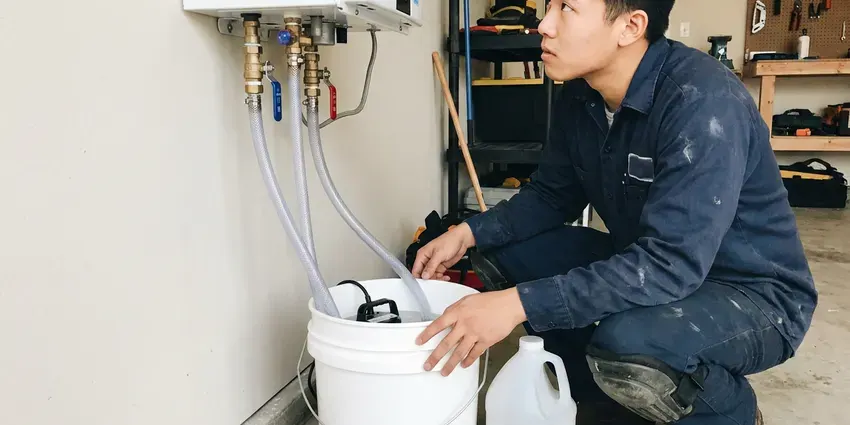

Hot Water Tank Maintenance in Portales, NM
Protect your investment and energy bill in Portales, NM with professional hot water tank maintenance. GVK Plumbing helps prevent costly repairs.
- Expert, Certified Plumbers
- Clear Pricing
- Gas and Electric Tanks
- Fast, Reliable Service

Expert Hot Water Tank Service in Portales, NM.
Call us today to schedule your hot water tank maintenance and keep your system running well.
Hot Water Tank Maintenance That Beats Hard Water in Portales, NM
When it comes to hot water tank maintenance in Portales, NM, GVK Plumbing focuses on preventive care that saves you money and hassle. We tackle common issues like sediment buildup and anode rod depletion. Water softeners and filtration systems are popular around Portales because they extend the life of fixtures and cut down on spotting.
Our expertise includes:
- Relief valve, expansion tank, burner and element checks
- Complete sediment flushing and cleaning
- Full drain and flush of built-up calcium sediment layers

Additional Plumbing Maintenance Services in Portales, NM
Our maintenance and specialty plumbing services in Portales, NM catch small problems before they become emergencies.


Tankless Water Heater Maintenance in Portales


Customers
Why Choose GVK Plumbing for Hot Water Tank Maintenance in Portales, NM?
Choosing GVK Plumbing for your hot water tank maintenance means choosing peace of mind. Our experienced plumbers understand the specific needs of hot water systems in New Mexico.
- Increase Efficiency, A well-maintained hot water tank uses less energy, which can lower your utility bills and your carbon footprint.
- Extend Lifespan, Proper care and regular inspections can greatly prolong the life of your hot water tank, delaying costly replacements.
- Extended Lifespan, Regular maintenance prevents premature wear, significantly extending the working life of your hot water tank.
Citywide Coverage
Our vans cover every neighborhood of Portales, from newer subdivisions with attic tanks to older homes with garage heaters. Wherever your tank sits, we bring the hoses and tools to flush it properly.
Experienced Team
When you choose GVK Plumbing, you're getting skilled professionals who understand the nuances of hot water tank systems and are dedicated to performing thorough, effective maintenance.
Safety-First Approach
We test the temperature and pressure relief valve and confirm the discharge pipe runs to an acceptable location. On gas units we check the draft hood, flue connection and combustion air for safe venting.
Trusted Certified Portales Plumbing Services Professionals
At GVK Plumbing, we take pride in providing certified plumbing services throughout Portales, NM. Backed by recognized industry credentials, our experienced plumbers combine technical skill with genuine customer care. Whether it is repair, installation, or maintenance, we follow strict safety and quality standards to deliver lasting results you can trust.
Call Us Now PHCC Plumbing Contractor Recognition
PHCC Plumbing Contractor Recognition Better Business Bureau (BBB) Accreditation
Better Business Bureau (BBB) Accreditation Angi Certified Pro
Angi Certified Pro ISO 9001 Quality Management Certification
ISO 9001 Quality Management CertificationReliable Hot Water Tank Maintenance Services in Portales, NM
Attic and Garage Tank Checkups in Portales, NM
Many homes put the water heater in a garage or attic where temperatures can swing widely. Heat speeds up the wear on plastic drain valves, gas valve seals and wiring insulation. We check drain pans, pan drain lines, platform height for gas units in garages and clearances around the tank. A leak in an attic tank without a working pan can ruin a ceiling, so we confirm that protection is in place.

Commercial Hot Water Tank Maintenance in Portales, NM
Businesses in Portales, NM rely closely on consistent hot water for their operations. Our commercial hot water tank maintenance services are tailored to the higher demands of commercial units. We provide thorough inspections, flushing and component checks so your business avoids costly downtime from hot water system failures. Keeping your commercial hot water tank in peak condition is vital for customer satisfaction and smooth operations.
Anode Rod Inspection & Replacement in Portales, NM
The anode rod is your hot water tank's sacrificial defense against corrosion. Water softeners and filtration systems are popular around Portales because they lengthen the life of fixtures and cut down on spotting. During our maintenance, we pull and inspect the anode rod. If it's significantly depleted, we recommend and perform a replacement to extend the life of your tank in Portales, NM, preventing rust from eating away at the tank lining.
Water Heater Expansion Tank Service in Portales, NM
Many modern plumbing systems include an expansion tank connected to the water heater. This tank takes up excess pressure created during the heating cycle, protecting your hot water tank and other plumbing fixtures. Our maintenance includes checking the expansion tank's air pressure and overall condition. Proper expansion tank function is essential to preventing premature wear on your hot water tank and maintaining system integrity.
Gas Burner and Venting Tune-Up in Portales, NM
On gas tanks we clean the burner, inspect the thermocouple or flame sensor and look for soot, rust flakes or scorching around the combustion chamber. We check the draft hood and vent connector for proper slope and secure joints. Dust and lint from garages can clog the flame arrestor screen on newer FVIR models, which causes the pilot to drop out. A clean burner gives a steady blue flame and lower gas bills.
Standard Hot Water Tank Tune-Up in Portales
GVK Plumbing offers a thorough tune-up for conventional hot water tanks, focusing on critical components. This includes draining the tank to remove sediment buildup, which is crucial wherever water carries minerals, and inspecting the anode rod for signs of corrosion. We also check heating elements, thermostat settings and all pipe connections for leaks. Our goal is to optimize your tank's performance and prevent future issues.
Gas and Electric Water Heater Checks in Portales, NM
Whether your home in Portales, NM uses a gas or electric hot water tank, our maintenance covers the specific needs of each. For gas units, we inspect burner assemblies, gas lines and vent systems for safety and efficiency. For electric units, we check heating elements, wiring and thermostats. Our detailed checks confirm all energy sources are operating correctly and safely.

Commercial and Rental Tank Maintenance in Portales
Property managers, restaurants and small offices often run several tanks that work much harder than a home unit. We set up scheduled maintenance for landlords and businesses, flushing each tank and logging the anode condition and valve test date. Records like these help with insurance and with planning replacements before a tank fails during business hours. We service 50 to 100 gallon commercial models as well as residential tanks in rental units.
Hot Water Tank Maintenance Near Me in Portales, NM
When you search for 'hot water tank maintenance near me' in Portales, NM, GVK Plumbing is your dependable local choice. We focus on prompt service, understanding that a well-functioning hot water system is essential for your daily comfort. Our local technicians are always ready to respond to your needs.
Local service matters because local water matters. Our team sees the scale levels in Portales homes firsthand and tailors flushing and anode choices to match. You get a maintenance plan built for your water, not a one-size-fits-all checklist.
GVK Plumbing at a Glance
- Licensed and insured plumbers serving Portales, NM
- Same-day appointments and 24/7 emergency response
- Upfront, flat-rate pricing before work begins
- 4.8-star rated by 320+ New Mexico customers
Portales Map
Portales Information
- Population
- 11,859
- Area codes
- Local
- Service area
- Portales and communities within 40 miles
- Nearby
- Clovis, Lovington, Roswell, Hobbs
Water softeners and filtration systems are popular around Portales because they lengthen the life of fixtures and cut down on spotting. Tanks in Portales, NM collect scale over time and need regular flushing to stay efficient and avoid early failure.
Expert Services
Trust our professionals for reliable GVK Plumbing solutions in Portales, NM.
Our Specialized Plumbing Services in Portales, NM
At GVK Plumbing, we provide a complete range of plumbing services across Portales, NM. From leak detection to full system installations, our team ensures fast, precise, and affordable service for both residential and commercial properties. Explore our core services below:


How Our Hot Water Tank Maintenance Service Works in Portales, NM
Our hot water tank maintenance process is designed for thoroughness and efficiency, keeping your system operating at its best.
Request a Quote
Call (505) 581-4975 and tell us your tank size, fuel type and age if you know it. We give you a flat price and a convenient arrival window.
Inspect and Flush
Your plumber shuts off fuel and water, drains the tank and flushes out sediment until the water runs clear. We pull the anode and test the relief valve while handling the drain.
Refill and Report
We refill, purge air from the lines and relight or reenergize the heater. You get a detailed report on the anode, valves and overall tank condition.
Frequently Asked Questions About Hot Water Tank Maintenance in Portales
The cost for hot water tank maintenance in Portales, NM usually ranges from $100 to $250, depending on the tank type, age and specific services required like anode rod replacement. We provide a detailed quote before any work begins.
A typical hot water tank maintenance service usually takes about 1 to 2 hours. This includes draining, flushing, inspection and any minor adjustments or part swaps like an anode rod.
In mineral-heavy water a magnesium rod may last three to five years. We measure it at every visit so you replace it before the tank lining begins to rust.
While some basic steps like draining a small amount of water can be done by a homeowner, professional hot water tank maintenance involves professional tools and experience to properly inspect electrical or gas components, anode rods and pressure relief valves. It is best left to a professional to ensure safety and code compliance.
Our technicians are trained to service all major hot water tank brands, including Rheem, AO Smith, Bradford White, State, Kenmore and more. We have the experience to handle many models, whether gas or electric.
Watch for slower recovery, rusty or cloudy hot water, noises, moisture around the base or a relief valve that drips. Any of these means it is time for an inspection visit.
Routine hot water tank maintenance, such as flushing and anode rod replacement, generally does not require a permit in Portales, NM. However, if major repairs or a full replacement are needed, a permit may be required to confirm compliance with local building codes.
GVK Plumbing services all major brands of hot water tanks, including but not limited to Rheem, Bradford White, A. O. Smith, State, Noritz and Bosch. Our technicians are familiar with a wide range of models and their specific maintenance needs.
What People Are Saying About Our Plumbing Experts?

James P.
Our commercial plumbing system had a leak under the sink, and GVK Plumbing handled it professionally. The plumbers arrived quickly and restored everything without disruption to our customers.
Commercial Plumbing · Artesia, NM
Laura S.
I scheduled a water heater replacement, and the team made the process smooth and affordable. The new unit works perfectly, and they cleaned up after completing the job.
Water Heater Replacement · Carlsbad, NM
Patricia H.
We had a slab leak that two other companies could not find. GVK Plumbing located it in under an hour, explained our options, and the price matched the quote to the dollar.
Slab Leak Repair · Clovis, NM
Emily R.
I called GVK Plumbing for plumbing repair, and the technician was fast, polite, and thorough. They explained the problem clearly and fixed it the same day. I will definitely hire them again. Highly recommended!
Plumbing Repair · Artesia, NM
Daniel K.
A pipe burst at 11 pm and they actually answered. The plumber showed up within the hour, shut everything down, and had us back to normal the next morning. Could not ask for more.
Emergency Plumbing · Artesia, NMSofia M.
Two new toilets installed in one visit, no mess left behind, and the tech even adjusted a faucet he noticed was dripping. Fair pricing and really friendly.
Toilet Installation · Clovis, NM